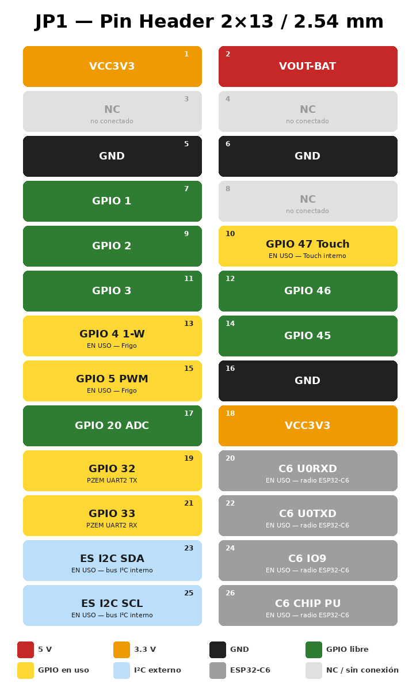

Pinout y conexiones
Guition JC1060P470C_I · ESP32-P4 + ESP32-C6 (Wi-Fi/BT) · DSI 1024×600 · touch GT911
Generado a partir del código del firmware VictronSolarDisplay (port ESP32-P4 / Guition JC1060P470C_I).
Última revisión: 12 mayo 2026 · Repo: github.com/Ehuntabi/victron-jc1060p470c-esp32p4
1. Resumen del módulo
- SoC principal ESP32-P4 (RISC-V dual-core 400 MHz, 32 MB PSRAM, 16 MB Flash).
- SoC de radio ESP32-C6 conectado por SDIO (Wi-Fi 2.4 GHz + BT 5 LE) gestionado por
esp_hosted.
- Display IPS 7" 1024×600 con controlador JD9165BA, interfaz MIPI-DSI 2 lanes.
- Touch capacitivo GT911 (I2C compartido con el RTC y el codec).
- RTC RX8025T (I2C 0x32) con pila CR1220.
- microSD slot 0 con SDMMC IOMUX dedicado.
- Codec audio ES8311 + amplificador NS4150.
- UART2 cableable al PZEM-004T (medidor de red 230 V).
- RS-485 onboard via MAX485 (U8) en UART1, conector J5 — para hablar con el derivador NE185.
- Cabeceras GPIO libres para sensores DS18B20 (frigo) y PWM (ventilador).
2. Display MIPI-DSI (panel JD9165BA)
| Función | Pin ESP32-P4 | Notas |
|---|
| Backlight (PWM) | GPIO 23 | LEDC timer 1 / canal 1 |
| Reset panel | GPIO 27 | Activo bajo |
| MIPI-DSI clk + data | PHY interno | 2 lanes, bitrate 750 Mbps, dotclk 52 MHz |
| LDO PHY DSI | LDO ch 3 | 2500 mV → VDD_MIPI_DPHY |
Resolución 1024×600, RGB565. Buffer LVGL: 50 líneas en PSRAM. Conector físico #15 (FPC 30P 0.5 mm).
3. Touch capacitivo GT911 (I2C)
| Función | Pin | Notas |
|---|
| I2C SDA | GPIO 7 | Bus I2C_NUM_1, 400 kHz, compartido |
| I2C SCL | GPIO 8 | |
| TOUCH INT | GPIO 47 | Interrupción |
| TOUCH RST | GPIO 48 | Activo bajo |
| Dirección | 0x14 / 0x5D | Detección automática |
4. RTC RX8025T (I2C, addr 0x32)
| Función | Pin / Reg | Notas |
|---|
| I2C SDA / SCL | GPIO 7 / 8 | Bus compartido |
| Vcc | 3.3 V | Backup CR1220 |
| Reg. tiempo | 0x00–0x06 | BCD: SEC, MIN, HOUR, WEEK, DAY, MONTH, YEAR |
| Reg. CONTROL | 0x0F | bit 6 = STOP oscilador |
| Reg. FLAG | 0x0E | bit 1 = VLF (Voltage Low Flag) |
5. microSD (SDMMC slot 0, IOMUX)
| Función | Pin |
|---|
| CLK / CMD | GPIO 43 / 44 |
| D0..D3 | GPIO 39 / 40 / 41 / 42 |
| TF_VCC | LDO ch 4 (3.3 V) — esp_ldo_acquire_channel(4) antes del mount |
| Pull-ups | Internos (SDMMC_SLOT_FLAG_INTERNAL_PULLUP) |
FATFS con LFN heap mode. Montado en /sdcard. Logs en /sdcard/frigo/ y /sdcard/bateria/.
6. ESP32-C6 — Wi-Fi/BT vía SDIO (slot 1)
| Función | Pin | Notas |
|---|
| CLK / CMD | GPIO 18 / 19 | 40 MHz |
| D0..D3 | GPIO 14 / 15 / 16 / 17 | |
| Slave RESET | GPIO 54 | esp_hosted reset al ESP32-C6 |
NO usar GPIO 14–19 ni 54 para otros fines. Son la conexión SDIO al radio.
7. Audio — codec ES8311 + amp NS4150
| Función | Pin | Notas |
|---|
| I2S MCLK / BCLK / LRCK / DOUT | GPIO 13 / 12 / 10 / 9 | |
| PA_CTRL (NS4150) | GPIO 11 | Activar amp (active high) |
| I2C codec | GPIO 7 / 8 | Misma I2C que touch + RTC, addr 0x18 |
8. Frigorífico — sensores y ventilador
| Función | Pin | Conector | Notas |
|---|
| 1-Wire DS18B20 | GPIO 4 | JP1 pin 13 | Pullup 4.7 kΩ a 3.3 V |
| Ventilador PWM | GPIO 5 | JP1 pin 15 | LEDC 25 kHz, control por T_Aletas |
9. PZEM-004T v3 — medidor red 230 V (UART2)
| Función | Pin | Conector | Notas |
|---|
| UART2 TX | GPIO 32 | JP1 pin 19 | 9600 baud 8N1, addr 0x01 |
| UART2 RX | GPIO 33 | JP1 pin 21 | Polling 2000 ms |
10. NE185 RS-485 directo (UART1, MAX485 onboard)
Componente main/ne185/. El P4 habla RS-485 directamente con el
derivador Nordelettronica NE185 a través del transceptor MAX485 (U8) integrado en
la placa Guition. Sustituye al panel NE187 retirado. No hace falta caja
ni hardware externo: solo un cable de 4 hilos del NE185 al conector J5.
| Función | Pin P4 | Conexión | Notas |
|---|
| UART1 TX | GPIO 26 | pin D del MAX485 onboard (U8) | 38400 8N1 |
| UART1 RX | GPIO 27 | pin R del MAX485 onboard (U8) | 38400 8N1 |
| DE/RE | — | controlados por NAND (U7) auto-direccion | NO hace falta GPIO extra |
| Bus RS-485 | — | Conector J5 (MX 1.25 4P, conector #11) | Pines A, B, GND, +5V |
Protocolo (38400 8N1, master): comando init FF 40 00 80 BF, idle
FF 40 00 C0 BF cada 5 s, toggle luz interior FF 01 00 C0 C0,
luz exterior FF 02 00 C0 C1, bomba FF 04 00 C0 C3. Trama de
respuesta de 20 bytes con cabeceras 0xFF en posiciones 0 y 14, checksum
(sum bytes 0..17) mod 128 == ((b[18..19]) mod 128) - 2. API publica:
ne185_init, ne185_get(ne185_data_t *),
ne185_send_cmd('i'/'o'/'p').
11. Mapa global de pines GPIO
| GPIO | Función | Periférico / Notas |
|---|
| 0 | GPIO out | Reset panel JD9165BA (LCD_RST según esquemático real) |
| 4 | 1-Wire | DS18B20 (JP1 pin 13, pullup 4.7 kΩ) |
| 5 | LEDC PWM | Ventilador frigo (JP1 pin 15, 25 kHz) |
| 7 | I2C SDA | GT911 + RX8025T + ES8311 |
| 8 | I2C SCL | |
| 9 | I2S DOUT | Codec ES8311 |
| 10 | I2S LRCK | |
| 11 | PA_CTRL | NS4150 amp |
| 12 | I2S BCLK | |
| 13 | I2S MCLK | |
| 14–17 | SDIO D0–D3 | ESP32-C6 esp_hosted (no usar) |
| 18 / 19 | SDIO CLK / CMD | ESP32-C6 (no usar) |
| 23 | LEDC PWM | Backlight LCD |
| 26 | UART1 TX | NE185 RS-485 — pin D del MAX485 onboard (U8) → conector J5 |
| 27 | UART1 RX | NE185 RS-485 — pin R del MAX485 onboard (U8) → conector J5 |
| 32 | UART2 TX | PZEM-004T (JP1 pin 19) |
| 33 | UART2 RX | PZEM-004T (JP1 pin 21) |
| 39–44 | SDMMC | microSD slot 0 IOMUX |
| 47 | GPIO in | Touch GT911 INT |
| 48 | GPIO out | Touch GT911 RST |
| 54 | GPIO out | Reset ESP32-C6 |
Pines no listados → libres para periféricos adicionales (los del JP1 vivos: 3, 20, 45, 46).
12. LDO internos del ESP32-P4
| Canal | Tensión | Carga | Notas |
|---|
| LDO ch 3 | 2500 mV | VDD_MIPI_DPHY | Activado por bsp_display_new() |
| LDO ch 4 | 3300 mV | TF_VCC microSD | Activado por datalogger_init() antes del mount |
13. Buses compartidos / consideraciones
- I2C bus (I2C_NUM_1, 400 kHz, SDA=7 / SCL=8): GT911 (0x14/0x5D), RX8025T (0x32), ES8311 (0x18). Sin colisiones.
- SDMMC: dos slots. Slot 0 IOMUX (GPIO 39–44) → microSD. Slot 1 GPIO matrix (GPIO 14–19) → ESP32-C6. Paralelos sin conflicto.
- UARTs: UART0 consola debug (GPIO 37/38 internos). UART1 NE185 RS-485 via MAX485 onboard (GPIO 26/27 → conector J5). UART2 PZEM-004T (GPIO 32/33 → JP1).
- PSRAM: 32 MB. Framebuffer DPI + buffers LVGL + ring buffer histórico batería (552 KB) + allocs grandes.
14. Conectores físicos del módulo
| # | Conector | Función |
|---|
| 1 | BOOT button | Pulsador BOOT del ESP32-P4 |
| 2 | Reset button | EN/RESET del ESP32-P4 |
| 3 | MX 1.25 2P | Salida altavoz |
| 4 | TF card slot | microSD slot 0 IOMUX |
| 5 | MX 1.25 2P | Entrada batería Li-ion 3.7 V |
| 6 | Battery button | On/off batería |
| 7 | USB-C FS | Programación + 5 V |
| 8 | MX 1.25 4P (CN2) | UART consola + 5 V |
| 9 | USB-C HS | USB 2.0 HS + 5 V |
| 10 | MX 1.25 4P | UART externo |
| 11 | MX 1.25 4P | RS-485 con MAX485 onboard |
| 12 | SH 1.0 4P (CN5) | I2C externo |
| 13 | RJ45 | Ethernet 100 Mbps |
| 14 | Battery holder | CR1220 del RTC |
| 15 | FPC 30P 0.5 | MIPI-DSI 2 lanes |
| 16 | JC-ESP32P4-M3 | Módulo SoC principal |
| 17 | FPC 6P 0.5 | Touch GT911 |
| 18 | Pin Header 2×13 (JP1) | Expansión GPIO 2.54 mm |
15. JP1 — pines disponibles para periféricos externos

| Pin | Señal | Estado |
|---|
| 1, 18 | VCC3V3 | Alim 3.3 V |
| 2 | VOUT-BAT | 5 V bidireccional |
| 5, 6, 16 | GND | Masa |
| 3, 4, 8 | NC | No conectado |
| 7 | GPIO 1 | Libre |
| 9 | GPIO 2 | Libre |
| 10 | GPIO 47 | Touch INT (interno) |
| 11 | GPIO 3 | Libre |
| 12 | GPIO 46 | Libre |
| 13 | GPIO 4 | Frigo DS18B20 |
| 14 | GPIO 45 | Libre |
| 15 | GPIO 5 | Frigo PWM |
| 17 | GPIO 20 | Libre (ADC1 CH4) |
| 19 | GPIO 32 | PZEM UART2 TX |
| 21 | GPIO 33 | PZEM UART2 RX |
| 20, 22, 24, 26 | — | Radio ESP32-C6 |
| 23, 25 | — | I²C externo (ES I²C) |
- Alimentación: 3.3 V en pin 1/18, 5 V en pin 2. GND en 5/6/16.
- UART libre extra: ninguno completo; quedan GPIOs 3, 20, 45, 46 sueltos.
- ADC: solo GPIO 20 (pin 17) tiene ADC1 CH4. PWM: cualquier GPIO libre (LEDC, 8 canales).
- Reasignables si no usas el frigo: GPIO 4 (pin 13) y GPIO 5 (pin 15).
- Niveles: 3.3 V TTL. Para 5 V o RS-232/RS-485 usar level-shifter/transceiver externo.
16. CN2 — UART consola / entrada 5 V (MX 1.25 4P)
Conector secundario para alimentación 5 V y/o consola UART0. Frontend protegido con MOSFET AO3401
(polaridad inversa) + TVS SMBJ6.0CA.
- Identificar pin 1: CN2 está pegado al USB-C #7. El pin 1 (VIN) es el extremo más cercano al USB-C. Pin 4 = GND.
- Alimentar la placa con 5 V externos: +5 V al pin 1, GND al pin 4. 5 V ±5 %, hasta ~1 A pico con backlight.
- Solo UNA fuente 5 V activa a la vez (no mezclar USB-C con CN2 VIN).
17. CN5 — I²C externo (SH 1.0 4P)
| Pin | Señal |
|---|
| 1 | GND |
| 2 | ESP_3V3 |
| 3 | ES_I2C_SCL |
| 4 | ES_I2C_SDA |
18. Alimentación
Tensión nominal: 5 V DC. Consumo ~600 mA (pico ~1 A con backlight máximo).
Cadena: USB-C / CN2 VIN → IP5306 (cargador Li + booster) → VOUT-BAT (5 V regulado) →
TLV62569 (DC-DC) → VCC3V3 (3.3 V). Si solo batería, IP5306 hace boost 3.7→5 V.
19. Notas de hardware y estado
[OK] Funcionando en producción:
- Display MIPI-DSI + touch GT911
- microSD (LDO ch 4, slot 0 IOMUX)
- Wi-Fi/BT vía ESP32-C6 (esp_hosted)
- RTC RX8025T (backup CR1220 + NVS)
- Audio ES8311 + NS4150
- LDO interno PHY MIPI-DSI
- PZEM-004T UART2 (firmware listo, pendiente cableado físico al medidor)
- NE185 RS-485 via MAX485 onboard (componente
main/ne185/
compilado y flasheado; UART1 GPIO 26/27, conector J5; widgets visibles en vista Overview
en gris hasta conectar el cable del NE185 al J5)
[!] Pendiente conexión física:
- DS18B20 1-Wire en GPIO 4 → JP1 pin 13 (pullup 4.7 kΩ a 3.3 V)
- Ventilador PWM en GPIO 5 → JP1 pin 15
- PZEM-004T → JP1 pin 19 (GPIO 32) y pin 21 (GPIO 33)
- NE185 RS-485 → conector J5 (MX 1.25 4P, conector #11). Cable 4 hilos del derivador NE185: A, B, GND, +5V. NO se necesita caja ni hardware externo.
Bug del fabricante: el esquemático Guition indica RX8130CE como RTC pero la
placa real lleva RX8025T (mapa de registros distinto). El firmware ya maneja correctamente el
RX8025T.